るべりえって、こんなお店です
群馬県邑楽町にある、創作ピザとスイーツのお店。
赤いコンテナが目印です。お店は10年目を迎えました。
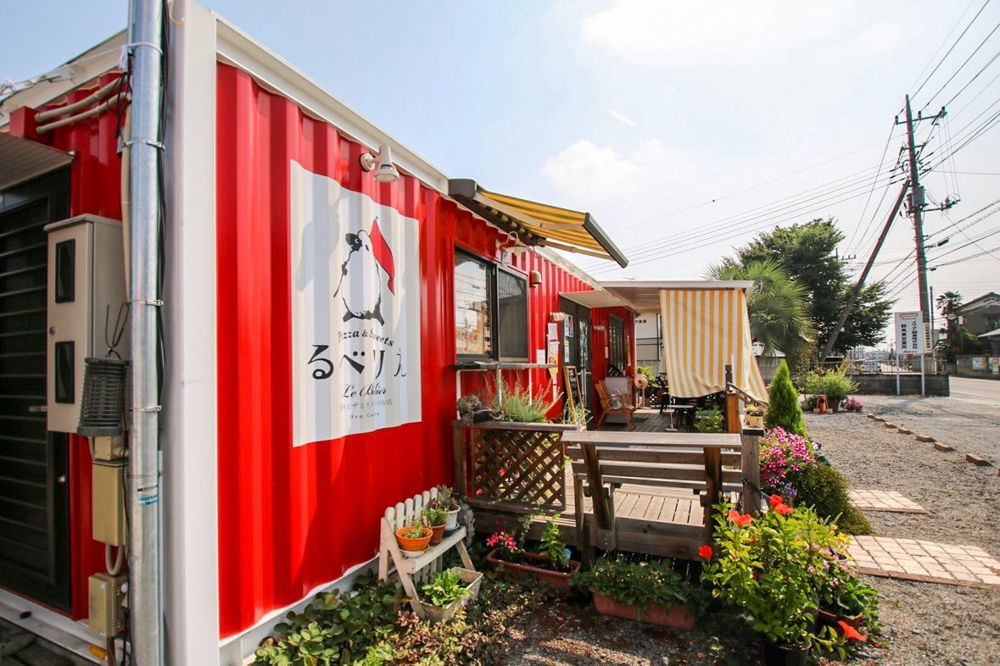
お店の情報
| 住所 | 群馬県邑楽郡邑楽町中野4550-3 |
|---|---|
| 営業時間 | 月・火・水・金・土 11:00〜20:30（ラストオーダー 20:00） 日曜 11:00〜18:00 |
| 定休日 | 木曜日 |
| お取り寄せ | お店の味を急速冷凍して、全国へお届けしています |
こだわり
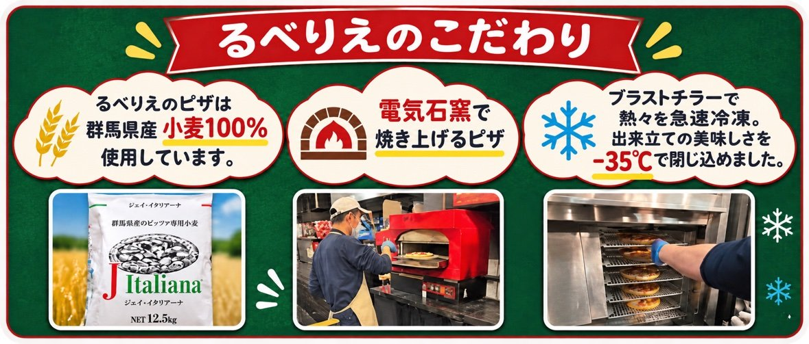
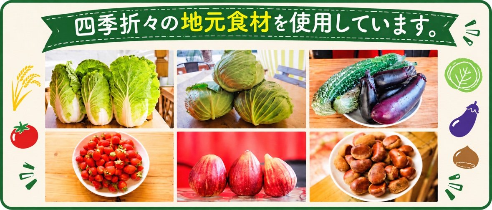
生地は群馬県産小麦100%。電気石窯で焼き上げたら、ブラストチラーで−35℃まで一気に冷凍して、出来立ての美味しさを閉じ込めています。具材には、四季折々の地元食材を使っています。
メディアで紹介されました
📺 マツコ＆有吉 「かりそめ天国」 で紹介されました
📺 JOYのASOBU-TV 「JOYnt!」 で紹介されました
🏅 群馬県産小麦100%使用の揚げピザが、邑楽町の新名物に認定されました
「かりそめ天国」で紹介された3品です。
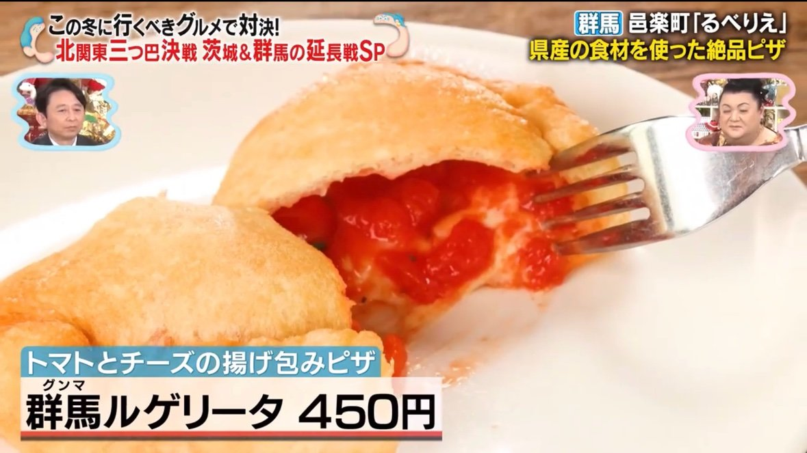


「JOYnt!」では、揚げピザを食べたJOYさんから「これマジ美味い！」をいただきました。
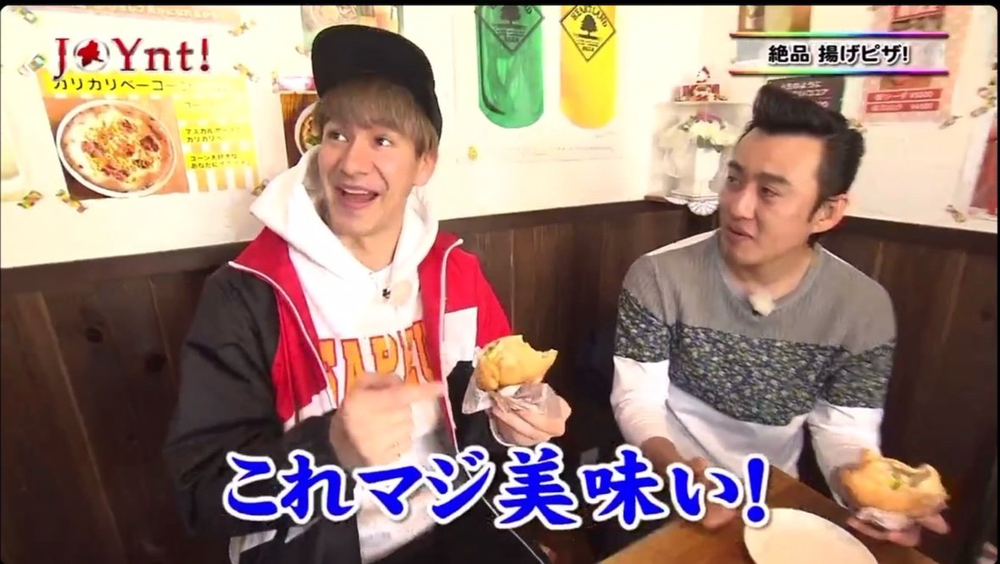

動画で見る、るべりえ
店舗紹介（商工会）
冷凍ピザ自販機の紹介（実食入り）
お店の様子
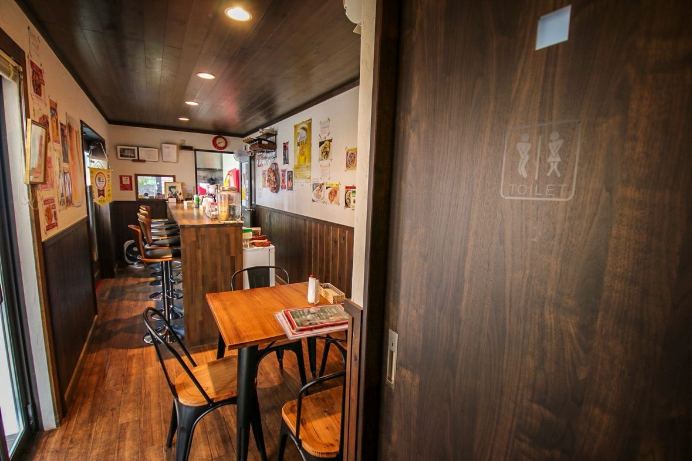
店内は、カウンター席とテーブル席。木の温もりのある小さなお店です。
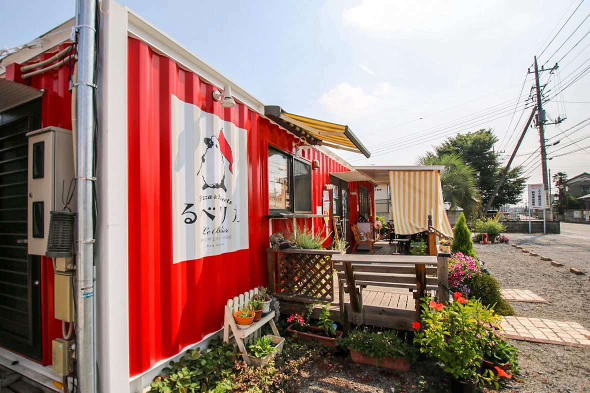
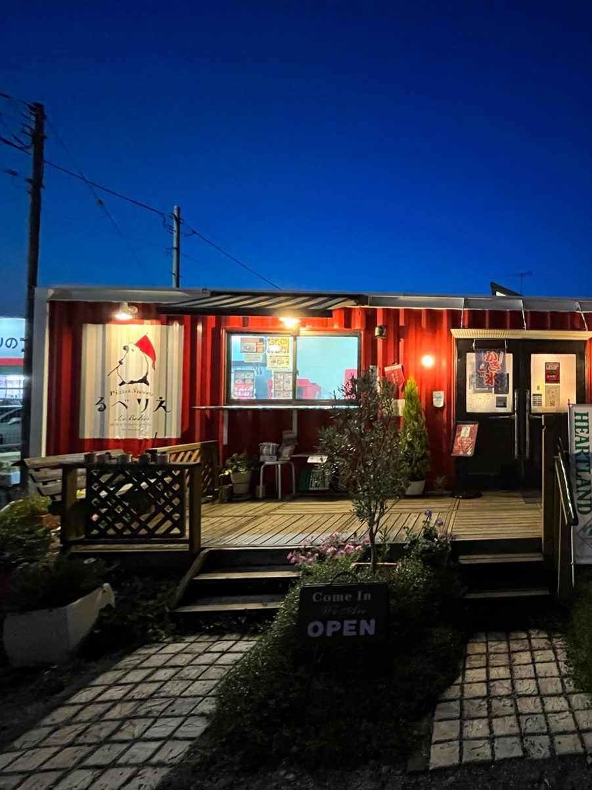
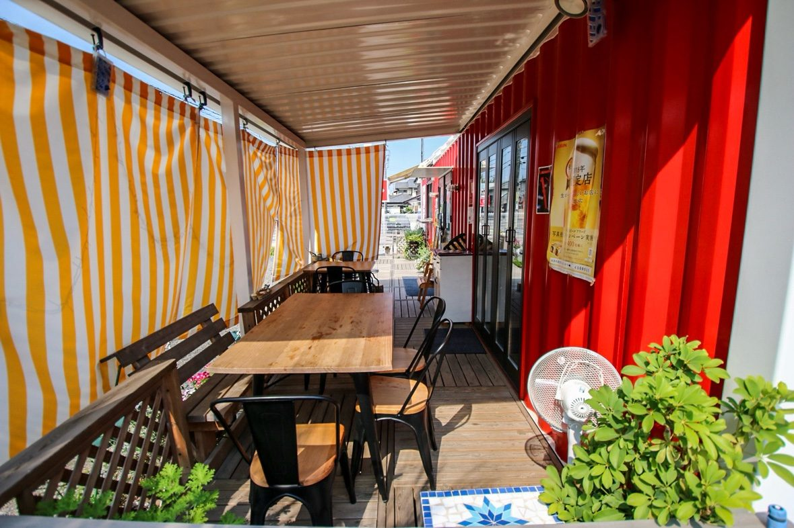
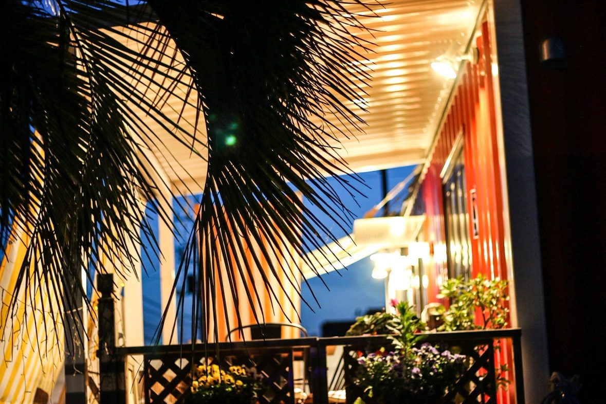
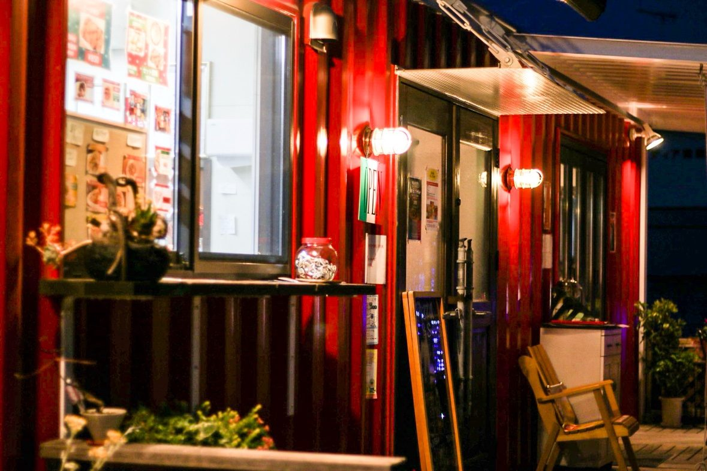
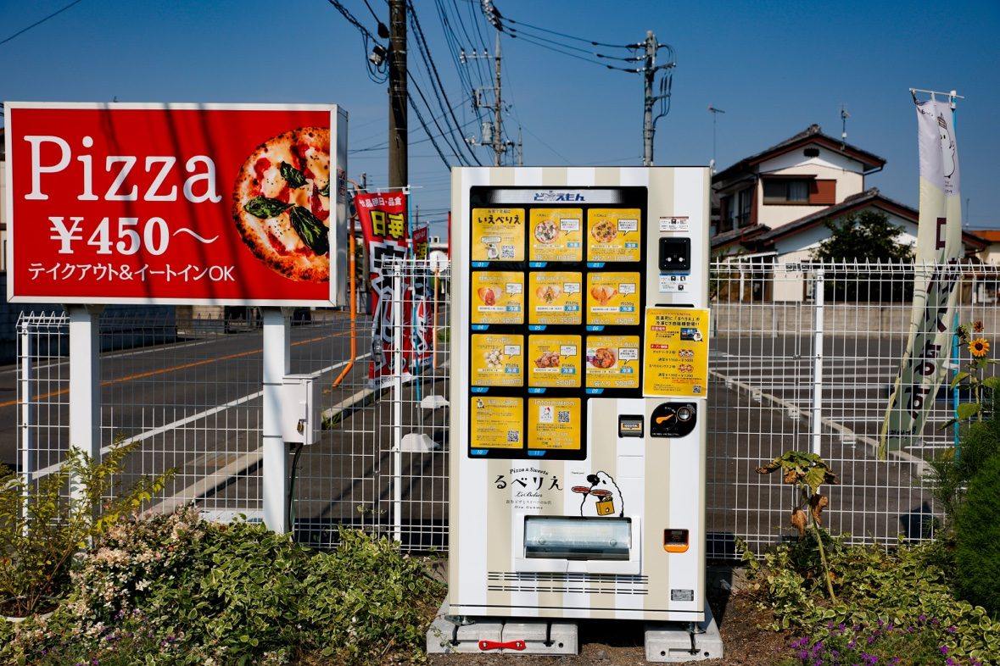
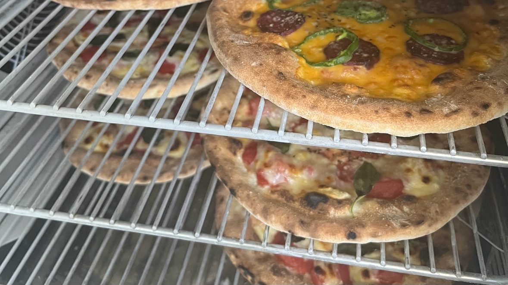
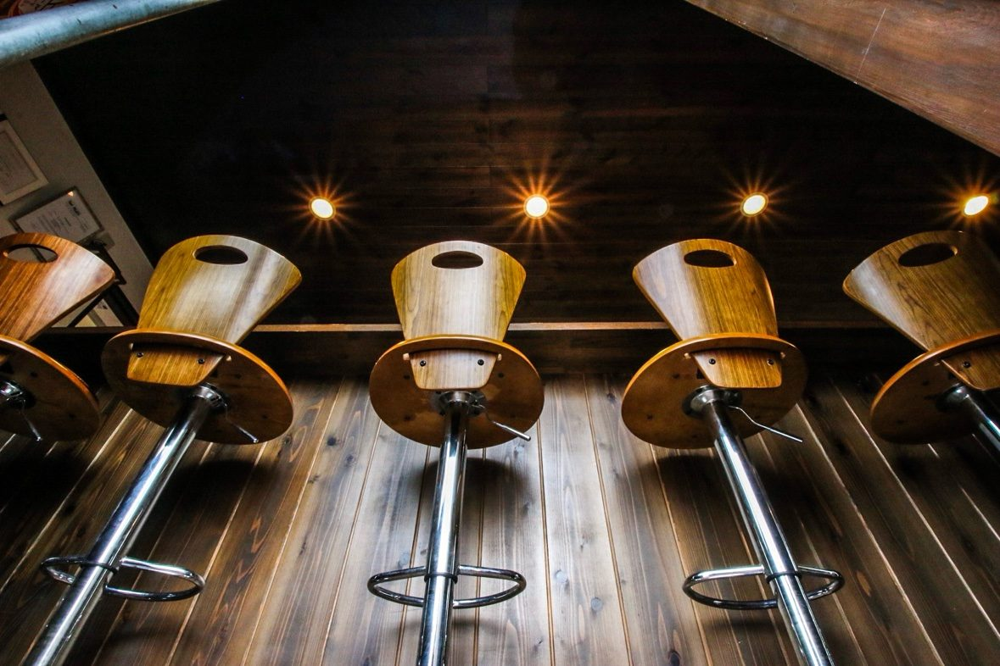
赤いコンテナが目印。テラス席と、冷凍ピザの自販機もあります。